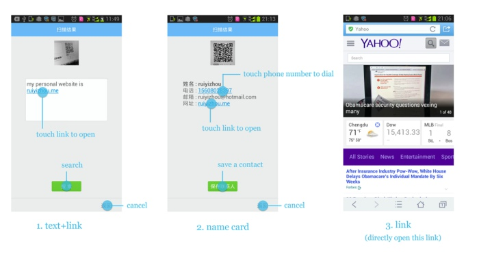
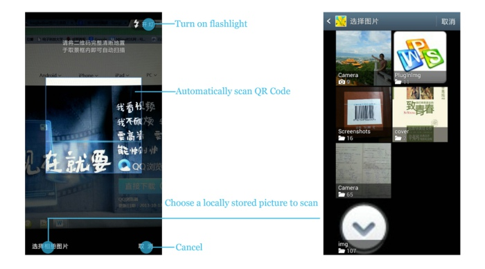

QR Code Scanning for QQ Browser (based on Android)
Note: Teamwork
Team Role:
UI designer, product manager
Duration:
July 2012 - June 2013
Website:
Main Functions:
- Users can scan a QR Code using a camera phone.
- Users can scan a QR Code from a local-stored picture, or an online picture.
- During scanning using a camera phone, the flashlight could be used to enlighten the QR Code if the environment is dark.
- Barcode scanning is also supported.
My Contributions:
- Consistently revised the interaction during a year.
- Added new functions such as scanning a QR Code from a local-stored picture, or an online picture.
- Conducted usability study during the design process.
- After release, supervised user feedback and offered optimization plan.
Project Description:
QR Code could store the information of a paragraph of words, a HTML link, a name card, etc. The principle of QR Code Scanning was that if we use the camera to shoot a QR Code, QQ Browser could decode the QR Code and get the information stored in it. We reinforced the QR Code Scanning to make it much stronger. First of all, QQ Browser could recognize a paragraph of words, and a HTML link, which could be either stored as a bookmark or open in a new window. Secondly, QQ Browser could recognize the information of a name card, and users could save the information directly as a name card in contacts, or dial the phone number offered, or send an email to the email address offered.

Figure 1. QR Code Scanning support different kinds of contents
What was more, not only the QR Code shot by the camera could be recognized, the QR Code stored locally on the phone and the QR Code showed on a webpage could also be recognized, which was quiet original because other apps or software could only recognize the QR Code shot by the camera.

Figure 2. Scanning a picture shot by camera or stored locally
In addition, we also supported the recognition of barcode, which was widely used on almost every product. Users could use QQ Browser to recognize the barcode and search for more information on the Internet. In the future, users might be able to buy the product they wanted by using QQ Browser to scan the barcode.

Figure 3. Barcode is also supported
Related Materials:
QQ Browser (Android) v5.2 Download